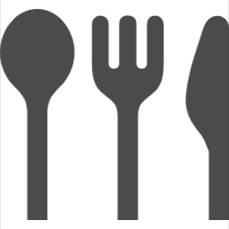
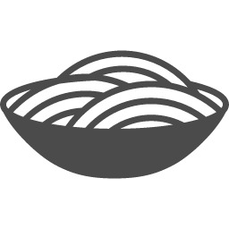

사근식당
사근동에서 무엇을 먹을지 모르시겠나요?
식당 소개
About
필터
음식종류 :
한식
중식
일식
분식
야식
기타
상관없음
상황 :
여러명
혼밥
포장
가성비
초스피드
해장
배달
상관없음
맛 :
매콤한
얼큰한
담백한
기름진
상관없음
스타뚝배기
뼈해장국,뼈다귀라면,제육볶음,김치볶음밥 등 다양한 메뉴가 전부 맛있는 집!
#한식 #해장국 #얼큰 #혼밥
위치 및 정보
다케오네
돈카츠,덮밥등이 대표적인 일식집. 이외 고등어구이, 육회비빔밥 등 다양한 메뉴도 판매함!
#일식 #덮밥 #돈카츠 #혼밥
위치 및 정보
한끼라도 잘먹자
다양한 메뉴를 파는 집. 순두부찌개+제육볶음을 세트로 시킬 수 있고, 반찬이 다양함!
#한식 #순두부 #제육 #혼밥
위치 및 정보
압구정찌개마을
김치찌개가 생각날때 방문하는 식당! 1인 찌개도 가능해, 혼밥도 괜찮은 식당
#한식 #찌개 #해장 #혼밥
위치 및 정보
참진한순대국
진하고 구수한 국밥집! 순대국밥 이외 수육국밥,등 다양한 메뉴가 존재하고 해장하기 좋은 식당
#한식 #국밥 #해장
위치 및 정보
삼거리식당
다양한 메뉴가 있는 백반집. 생선조림 백반이 있어, 생선이 먹고싶을 때 방문하기 좋음
#한식 #백반 #생선
위치 및 정보
따봉감자탕
감자탕이 대표적인 식당! 같이 반주하기도 좋고, 끝나고 볶음밥도 맛있음!
#한식 #감자탕 #얼큰
위치 및 정보
대성식당
석쇠불고기가 대표적인 백반집! 부모님, 외부사람등 대접하기 좋은 백반집
#한식 #백반 #같이
위치 및 정보
반미 3.5
베트남식 샌드위치 전문점. 닭고기, 등 다양한 재료가 푸짐하게 들어감!
#샌드위치 #베트남 #간편 #가성비
위치 및 정보
신참 떡볶이
떡볶이가 주된 메뉴. 순대, 주먹밥 등 다양한 메뉴를 파는 곳!
#분식 #떡볶이 #어묵 #순대
위치 및 정보
탕화쿵푸 마라탕
마라탕 맛집! 친구들 여럿이서 오기 좋은 마라탕 집
#중식 #마라탕 #얼큰 #매콤
위치 및 정보
종점토스트
토스트가 먹고 싶으면 가는 집! 굉장히 빨리 나오고 저렴함. 사장님이 굉장히 친절하심
#토스트 #가성비 #초스피드
위치 및 정보
사근통닭
'서울 5대 치킨'에 들어가는 옛날 통닭집. 옛날 통닭 특유의 카레 맛이 굉장히 맛있고, 저렴하고 양 많은 대표적인 치킨집!
#야식 #치킨 #양많음 #가성비
위치 및 정보
보쌈제복
보쌈, 갈비 등을 한상으로 먹고싶으면 가는 곳. 1인 보쌈도 있어 혼밥하기도 좋고, 국밥류도 팜!
#보쌈 #갈비 #혼밥
위치 및 정보
고향식당
각종 덮밥, 찌개류를 먹고싶으면 무난한집, 할머니집 같은 정서가 느껴지는 곳
#한식 #덮밥 #찌개
위치 및 정보
쉐프밥버거
밥버거가 맛있는 집! 시간이 없다면 쉐프밥버거에서 밥버거로 한끼 든든하게!
#한식 #밥버거 #빠름 #가성비
위치 및 정보
명희네손칼국수
얼큰한 칼국수를 먹고싶을 때 찾는 집
#한식 #칼국수 #얼큰 #해장
위치 및 정보
원조할머니콩나물국밥
콩나물국밥으로 유명한 식당. 단, 식당이 골목 안쪽에 있기에 잘 못찾을 수 있음!
#한식 #국밥 #얼큰 #해장
위치 및 정보
피자랑
오곡도우로 만든 피자집. 프렌차이즈 피자에 비해 정말 저렴함, 포장만 가능하니 참고
#야식 #피자 #배달 #같이
위치 및 정보
할매불백
불고기 백반으로 한끼 해결하기 무난한 식당
#한식 #불백 #같이 #혼밥
위치 및 정보
한솥도시락
간단하고 빠르게 포장해서 먹는 도시락, 저렴하게 빠르게 먹고싶다면 강력 추천!
#한식 #도시락 #혼밥 #포장
위치 및 정보

쉐프의 돈까스
돈까스 전문집. 사근동에서 돈까스가 끌린다면 여기로!
#분식 #돈까스 #혼밥 #함께
위치 및 정보
귀족
사근동에서 보쌈, 족발이 먹고싶다면 이곳으로!
#한식 #보쌈 #족발 #함께 #배달
위치 및 정보
미쳐버린 파닭
파닭, 후라이드 치킨 등을 파는 곳. 익히 알고있는 파닭 체인점집
#야식 #치킨 #파닭 #배달
위치 및 정보

대연각
사근동 유일 중국집
#중식 #배달 #자장면 #짬뽕
위치 및 정보
한양촌
고추장불고기, 순두부찌개, 등 다양한 한식을 먹을 수 있는 식당
#한식 #가성비 #혼밥 #다양한 메뉴
위치 및 정보
타이인플레이트
태국음식집. 가성비가 괜찮고, 맛있음
#태국 #쌀국수 #팟타이 #푸팟퐁커리
위치 및 정보
미네스키친
일식집. 돈까스, 카레, 덮밥등이 맛있는 곳. 가격이 조금 있음!
#일식 #덮밥 #돈까스
위치 및 정보
다시올치킨
닭칼국수가 유명한 집! 치킨도 맛있음
#치킨 #칼국수 #얼큰한 #국물
위치 및 정보